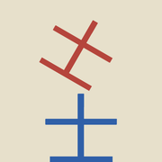
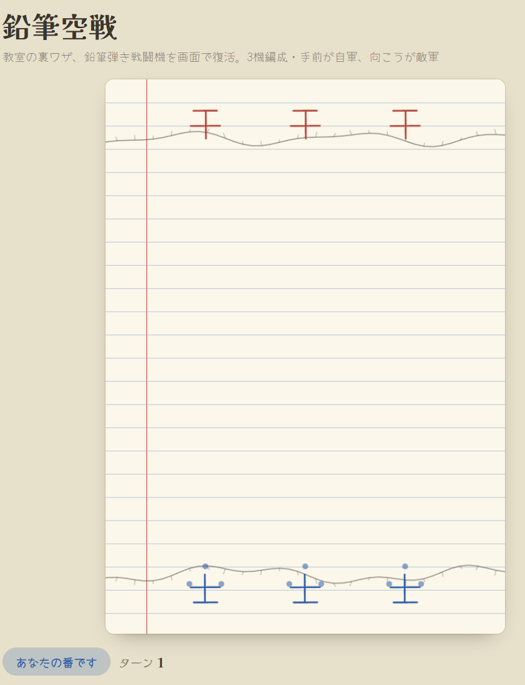
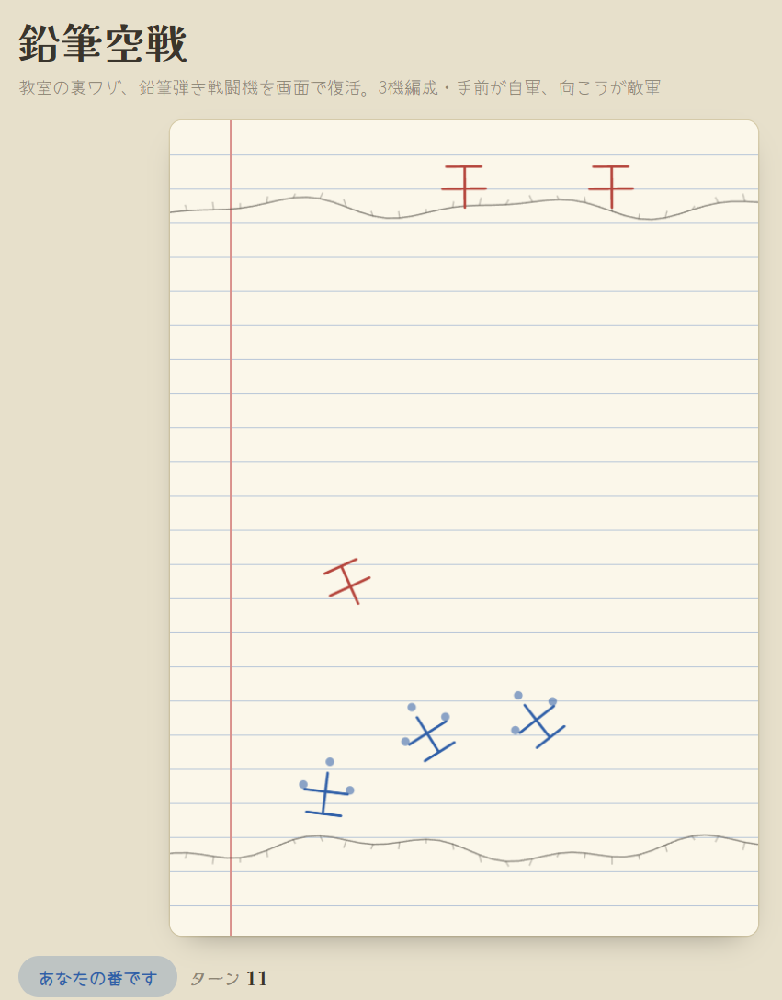
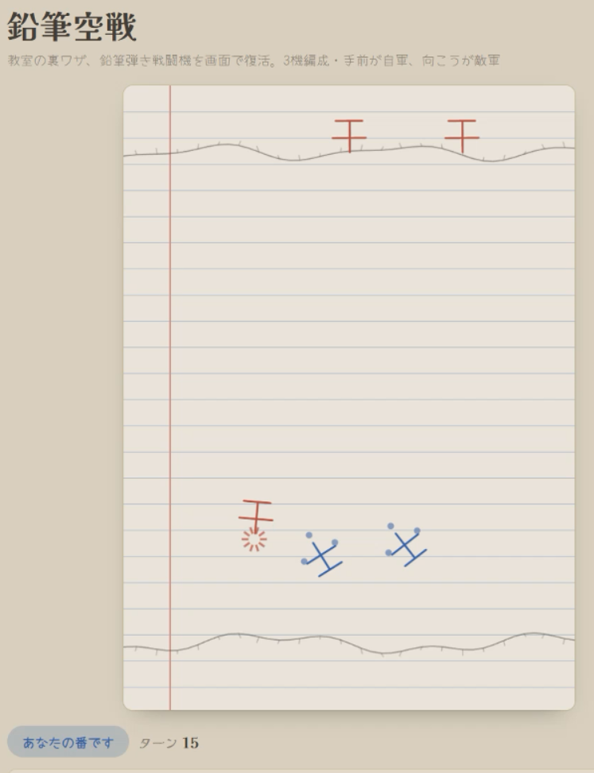
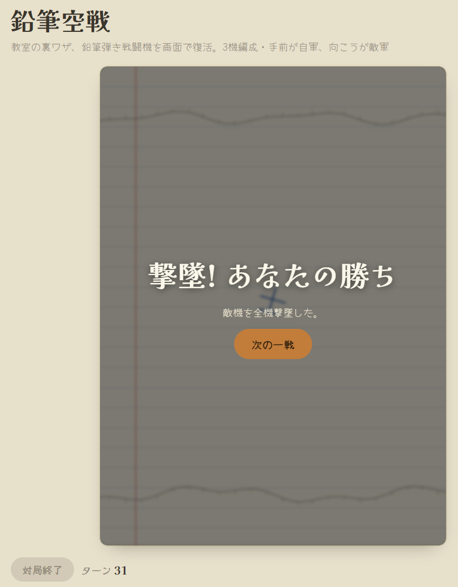

鉛筆空戦
教室の裏ワザ、鉛筆ではじく戦闘機を
画面の中で復活させました。
鉛筆の芯を紙に立ててはじき、線を引いて「士」の字の自機を動かす——あの遊びをブラウザゲームにしました。3機編成で、手前が自軍、ノートの向こうが敵軍です。

教室の裏ワザ、鉛筆ではじく戦闘機を
画面の中で復活させました。
鉛筆の芯を紙に立ててはじき、線を引いて「士」の字の自機を動かす——あの遊びをブラウザゲームにしました。3機編成で、手前が自軍、ノートの向こうが敵軍です。




紙の上で鉛筆の芯をはじいて戦闘機を飛ばす、あの遊びを覚えている方はどれくらいいるでしょうか。ノートの罫線と手描き風の海岸線だけは、当時の雰囲気を残したつもりです。
― 店主 佐々木
ご感想、ご質問はこちらから。